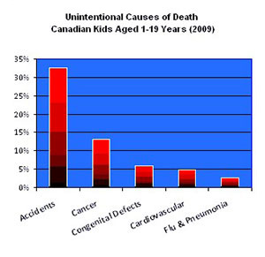
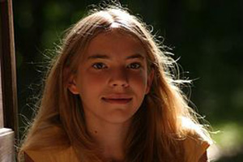
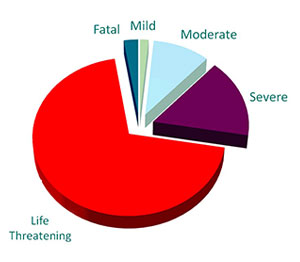

Helping kids in the fight of their lives
Our only goal is to raise money to help kids with cancer. Our founding principle is that 100% of
the money must be spent on kids who are being treated for cancer at BC Children's Hospital.
CANCER in KIDS
A Long Way to Go
Next to accidents, cancer still remains the largest non-accidental cause of death for Canadians between the ages of one and nineteen years old, but it is improving.
Twenty five years ago, 80% of the kids with cancer died. Today, thanks to research, about 80% live at least five years. Some pediatrc cancers, such as brain stem glioma and Stage IV rhabdomyosarcoma are particularly distessing cancers with extremely low survival rates. Teenagers also suffer abysmal survival rates.
For more information see the website of the American Society of Clinical Oncology.
Hope Beyond Chemo
Basic chemotherapy treatments were developed in the 1970s and have saved millions of lives, but chemo alone has not improved survival rates of some kid's cancers for decades. Chemo doses and frequency are much higher in children than adults and treatments last longer, yet science is at or near the limits of saving children with chemo.
Successful treatments for hard to cure cancers will depend upon the development of new drugs. One of the toughest kid's cancers was chronic myeloid leukemia, but the drug Gleevec which entered the market in 2001, ensures that plus 80% of the kids survive. Gleevec is a new class of cancer drug that targets specific molecules rather than using chemo to attack all fast growing cells. A new drug is needed to treat or cure the 20% of kids who don't make it today.
Surviving Kid's Cancer Treatments
Side effects during pediatric cancer treatment may include hair loss, infections, loss of feeling in feet, infertility, amputations, serious mouth sores, hearing and sometimes blindness.
In comparison, molecular therapies could have minimal side effects compared to chemo, radiation and surgery. Gleevec, for example, has comparatively few side effects. More research is needed in almost every aspect of treatment and care for kids with cancer. For an example of work by a research lab see the Charles Keller Lab at Oregon Health and Sciences University. For further information see the website of the American Society of Clinical Oncolog/ay.